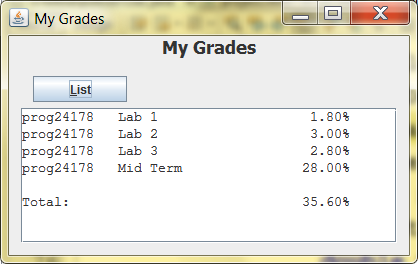
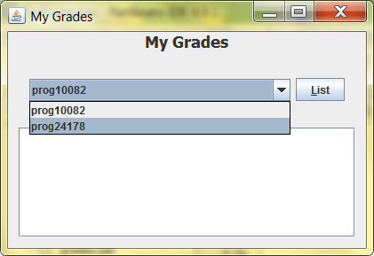
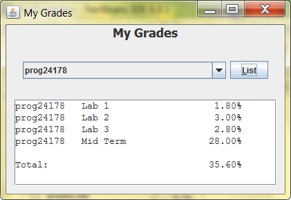

Reading data from a plain text file that was created with a character output stream is as simple as following a similar 3-step process as you did when you created the file:
In Chapter 9.7, they describe how to read in data from a plain text file using the Scanner class. You've already used the Scanner class for keyboard input: When you construct a Scanner object you are giving the constructor System.in. System.in refers to the default input device (keyboard). When you give the Scanner constructor a String, that String value becomes the input. For example:
Scanner scanner = new Scanner("this is a string 123 456");
while (scanner.hasNext())
System.out.println(scanner.next());
The above code will output:
this is a string 123 456
The Scanner divides its input string into tokens, and each token is delimited by whitespace. In this case, the string has 6 tokens: this, is, a, string, 123, and 456. Each of the 6 tokens is separated by a space.
The scanner.hasNext() method returns true if there is a token coming up. In the first iteration of the loop in the example above, scanner.hasNext() returns true, because it sees the first token ("this"). The scanner.next() method then retrieves and returns that token as a string, up to but not including the space. In the second iteration, the hasNext() method returns true again, because it sees the second token ("is"). Again, the scanner.next() method returns the string "is". The loop continues until the last token "456" is read. When the loop condition scanner.hasNext() is checked the final time, it returns false becauase there are no tokens left.
If your input data has more than one line (as your files likely will), you can use the scanner.hasNextLine() and scanner.nextLine() instead of scanner.hasNext() and scanner.next(). They work in the same manner, except that the "next line" methods use the new-line as their default delimiter.
The default delimiter for tokens is the whitespace characters. This includes tabs, spaces, and new-lines. You can change the default token delimter by using the scanner's useDelimiter() method. This is an overloaded method with two versions. One takes a string argument that represents the delimiter you'd like to use. The second version takes a Pattern object. You can read more about Pattern objects in the Pattern docs and in this article. Either way, the Scanner class supports regular expressions. Examples:
scanner.useDelimiter(","); // a comma is the delimiter
scanner.useDelimiter("\\|"); // the pipe is the delimiter
scanner.useDelimiter(",|\\s"); // the comma or whitespace delimiter
// comma preceded or followed by some amount of whitespace
scanner.useDelimiter("\\s*,\\s*");
scanner.useDelimiter("\n"); // newline delimiter
// a better way of getting the system's new-line character as the delimiter:
scanner.useDelimiter(System.getProperty("line.separator"));
// an even better way of catching all the possible values
// that could represent a newline:
scanner.useDelimiter("\r\n|[\r\n\u2028\u2029\u0085]");
Having the ability to use tokens and different delimiters means that you can use the Scanner class on a data file! In fact, one of the Scanner constructors accepts a File object! For example, the following statements sets up a Scanner object stream to the file "example.dat":
// short way:
Scanner fileIn = new Scanner(new File("example.dat"));
// long way:
File file = new File("example.dat");
Scanner fileIn = new Scanner(file);
For example, imagine a file that contained the following:
Jollymore, Kaluha: fat grey tabby Widmann, Bridget: tiny but destructive grey tabby MacDonald, Bibs: little black cat with OCD
You could then use the following code snippet to display each line of the file:
Scanner scanner = new Scanner(new File("example.dat"));
while (scanner.hasNextLine());
System.out.println(scanner.nextLine());
scanner.close();
Alternatively, you could say:
Scanner scanner = new Scanner(new File("example.dat"));
scanner.useDelimiter(System.getProperty("line.separator"));
while (scanner.hasNext());
System.out.println(scanner.next());
scanner.close();
The output would basically just be the contents of the file (see above).
Don't forget to close your scanner object when you're done reading in all the data!
When you construct a Scanner using a File object, a FileNotFoundException could be thrown if the source file does not exist (you can't read from a file that isn't there). This is an unchecked exception (a child of the IOException class) so make sure you handle this exception in some way.
If you like, you can even parse each line of input from the file using additional delmiters. For example, the file description for this file indicates that the last name field value is followed by a comma, which is then followed by the first name field value. This is then followed by a colon with precedes a description. Therefore, there are two different field delimiters: the comma separating the names and the colon separating the names from the description. We can extract these three individual fields using a few different techniques.
The split() method in the String class will accept a regular expression that defines the delimiter, split a string into an array of strings, and return the array. For example:
String s = "cat, dog, fish, hamster, lizard".
String[] pets = s.split(",\\s*");
The above statements will split the string s into a 5 element array called pets. pets[0] contains "cat", pets[1] contains "dog", pets[2] contains "fish", pets[3] contains "hamster", and pets[4] contains "lizard".
We know that each record has three fields separated by a comma or colon, so we could use the following to separate up the fields:
Scanner scanner = new Scanner(new File("example.dat"));
scanner.useDelimiter(System.getProperty("line.separator"));
while (scanner.hasNext()) {
String s = scanner.next();
String[] fields = s.split("\\s*,\\s*|\\s*:\\s*");
System.out.println("Cat Info:");
for (String f : fields) {
System.out.println(f);
}
System.out.println();
}
scanner.close();
The above code segment will output:
Cat Info: Jollymore Kaluha fat grey tabby Cat Info: Widmann Bridget tiny but destructive grey tabby Cat Info: MacDonald Bibs little black cat with OCD
A second way of parsing a record is to use a second Scanner object. The first scanner object retrieves a record, and the second object retrieves the individual fields from each record. Example:
public static void main(String[] args) throws IOException {
Scanner scanner = new Scanner(new File("example.dat"));
scanner.useDelimiter(System.getProperty("line.separator"));
while (scanner.hasNext()) {
String s = scanner.next();
displayFields(s);
}
scanner.close();
}
private static void displayFields(String s) {
System.out.println("Cat Info:");
Scanner fieldSep = new Scanner(s);
fieldSep.useDelimiter("\\s*,\\s*|\\s*:\\s*");
while (fieldSep.hasNext())
System.out.println(fieldSep.next());
System.out.println();
fieldSep.close();
}
It usually won't matter which way you chose to parse a record. Sometimes you'll prefer to use the split() method and sometimes you'll prefer to use an additional Scanner object. As long as you're familiar with regular expressions, you should have no problem working with either one. If you need more help on regular expressions, check out the Regular Expressions Lesson in the Java Tutorial and Supplements from your textbook (select "Part III Java Supplements" in the left-hand menu, then click and download "Supplement H").
You will occasionally need to read in primitive data such as integers and doubles, and even characters and booleans from a data file. You could easily use a method like Double.parseDouble() or Integer.parseInt() on a field value after you retrieve it. As an example, imagine you had a file with the following description:
| File Name: cds.dat | ||
| A list of my CD inventory | ||
| Field Description | Data Type | Comments |
|---|---|---|
| cd title | String | the title of the CD |
| artist | String | the artist performing on the CD |
| number of copies | integer | the number of copies in inventory |
| cost | double | the cost value of this CD |
As an example, the file's contents are:
Four Seasons, Vivaldi, 3, 12.99 Weight, Henry Rollins, 10, 10.00 Has Been, William Shatner, 9, 15.99 Hit and Run, Big Sugar, 12, 16.99
A program reads in each CD record and displays the title and artist on one line, and then the number of copies, cost, and the total value of this inventory item (number of copies * cost) on the next line. Each record will be displayed in the following format:
Sample Title by Sample Artist x @ pp.pp ea: $tt.tt
(x is the number of copies, pp.pp is the cost, and tt.tt is the total value)
Code for this program might appear as:
private static void main(String[] args) throws IOException {
Scanner scanner = new Scanner(new File("cds.dat"));
scanner.useDelimiter(System.getProperty("line.separator"));
while (scanner.hasNext()) {
String s = scanner.next();
parseRecord(s);
}
scanner.close();
}
private static void parseRecord(String record) {
Scanner recIn = new Scanner(record);
recIn.useDelimiter("\\s*,\\s*");
String title = recIn.next();
String artist = recIn.next();
int numCopies = Integer.parseInt(recIn.next());
double price = Double.parseDouble(recIn.next());
double total = price * numCopies;
System.out.println(title + " by " + artist);
System.out.print(numCopies + " @ " + price + " ea.");
System.out.printf(": $%3.2f%n", total);
recIn.close();
}
In the parseRecord() method above, we use the next() method to retrieve the next token in the record string. When we retrieve the number of copies and the price, we parse those field values into int and double, respectively.
There is a much easier way to retrieve primitive data from a file using Scanner. When you've used Scanner for keyboard input, you used the nextInt() and nextDouble() methods to retrieve integer and floating point values. You can also use these to retrieve the values from the file in the above example:
... String title = recIn.next(); String artist = recIn.next(); int numCopies = recIn.nextInt(); double price = recIn.nextDouble(); ...
This is definitely a lot easier than using parseInt() and parseDouble()!
When retrieving data from a file, it's always important to think of data validation. Is there any guarantee that the data you are reading is valid data? For example, what if you assume that the integer field you are about to read in is a valid integer? How do you know that the person who wrote the output program that created the file did it correctly? It's important to ensure that your program doesn't crash or work abnormally when the input data is invalid. There are a number of ways you can go about ensuring that your program works properly; here are a couple of ideas to get you started.
The obvious way to check your data for validity is to use if-statements. As you read in a field, you can check to see if it matches a given criteria. For example, you could have something such as:
String field = scanner.next();
int intField = 0;
if (isValidInt(field))
intField = Integer.parseInt(field);
private static boolean isValidInt(String s) {
boolean ok = true;
try {
int temp = Integer.parseInt(s);
} catch (NumberFormatException ex) {
ok = false;
}
return ok;
}
In your past experience with Scanner, you learned that an InputMismatchException is thrown if the user types a string when you ask for an integer. You can use this when reading data from a file, as in the example below:
try {
...
int intField = scanner.nextInt();
...
} catch (InputMismatchException ex) {
// error message, or whatever
}
This is probably the technique most preferred by programmers that use the Scanner class. It has the most flexibility and can sometimes result in the least amount of code ;)
The Scanner class contains a set of methods that check to see if the next token of a certain type exists. These methods return true if the token exists and false if the token doesn't exist. For example, the Scanner.hasInt() method returns true if the next token is a valid integer, and the Scanner.hasDouble() method returns true if the next token is a valid double value.
For example, given a file temp.dat with the contents:
Kaluha Jollymore, 1992, 29.5
The following statements hasXXX() methods below will result true or false:
Scanner scanner = new Scanner(new File("temp.dat"));
scanner.useDelimiter("\\s*,\\s*");
System.out.println(scanner.hasNext()); // prints true
System.out.println(scanner.next()); // prints Kaluha Jollymore
System.out.println(scanner.hasNextInt()); // prints true
System.out.println(scanner.next()); // prints 1992
System.out.println(scanner.hasNextInt()); // prints false
System.out.println(scanner.next()); // prints 29.5
The output of the last hasNextInt() statement is false because the third token is 29.5, and that is not a valid integer value.
It is standard when you use the Scanner class to read primitives from a character file, that you use a statements such as:
String title = (recIn.hasNext()) ? recIn.next() : ""; String artist = (recIn.hasNext()) ? recIn.next() : ""; int numCopies = (recIn.hasNextInt()) ? recIn.nextInt() : 0; double price = (recIn.hasNextDouble()) ? recIn.nextDouble() : 0;
In each of these, the conditional operator is used to check to see if a valid token exists. If the token does exist, the token is retrieved and stored in the variable. If the token does not exist, the default null value is stored in the variable, instead.
The grades program: In the previous session you created a program that obtained information from the user about various assignments in different courses. For this exercise, write a program that reads and processes each record. After reading each record, calculate the percentage weighting of that assignment towards the final grade (e.g. if the evaluation was 11/15, and worth 10% of your grade, that should give you a total percentage of 11/15 * 10 = 7.33% of your final grade). After all records have been read, calculate and display the total grade percentage to date for all your stored assignment records.
Example:
Sample file data:
prog24178|Lab 1|9|10|2 prog24178|Lab 2|15|15|3 prog24178|Lab 3|14|15|3 prog24178|Mid Term|70|75|30
Sample results:

HINT: to get the columns lined up, use String.format() and set the text area's font to Courier or Courier New.
Challenge!
If you're looking for a challenge, try this:
 
Here, I've added a combo box that allows the user to select which course data they'd like to view, in case there is data for more than one course in the data file. I had to add a method to my constructor that loaded the combo box with the course codes that appear in the file (NOTE: a course code can appear more than once in the course file so you only add a course code to the combo box if it's not already in there. Ask me for hints on how to do this with the least code possible ;) )
When the user selects a course and then clicks the List button, They see only the data for the course they selected. Try to make good use of methods here (I used a couple of overloaded methods I created) so you don't end up with too much redundant code.